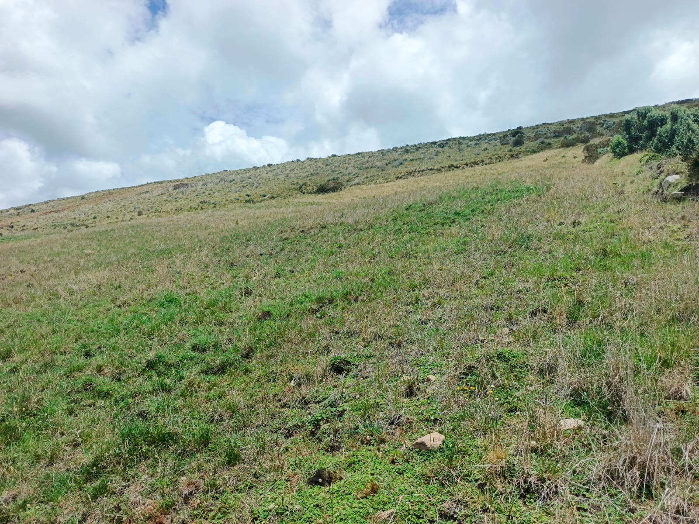
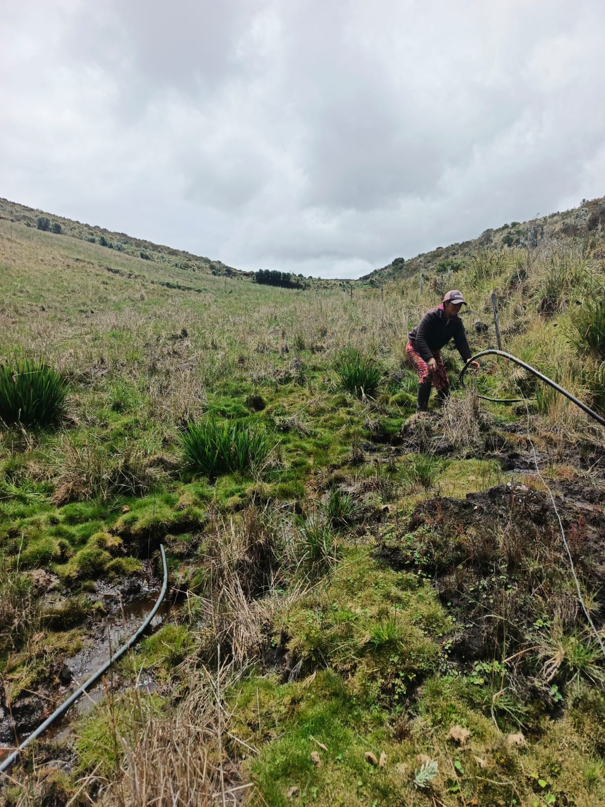
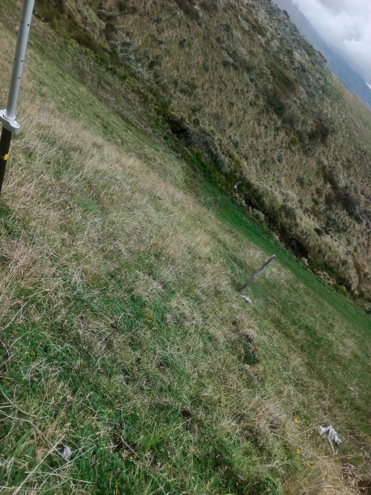
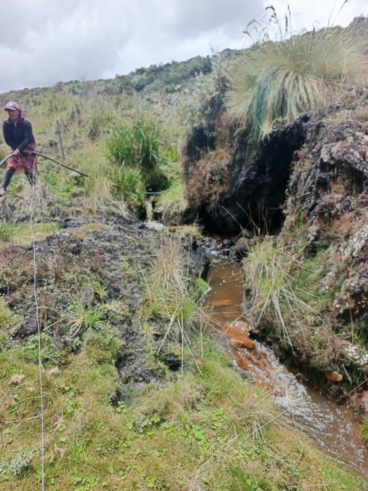
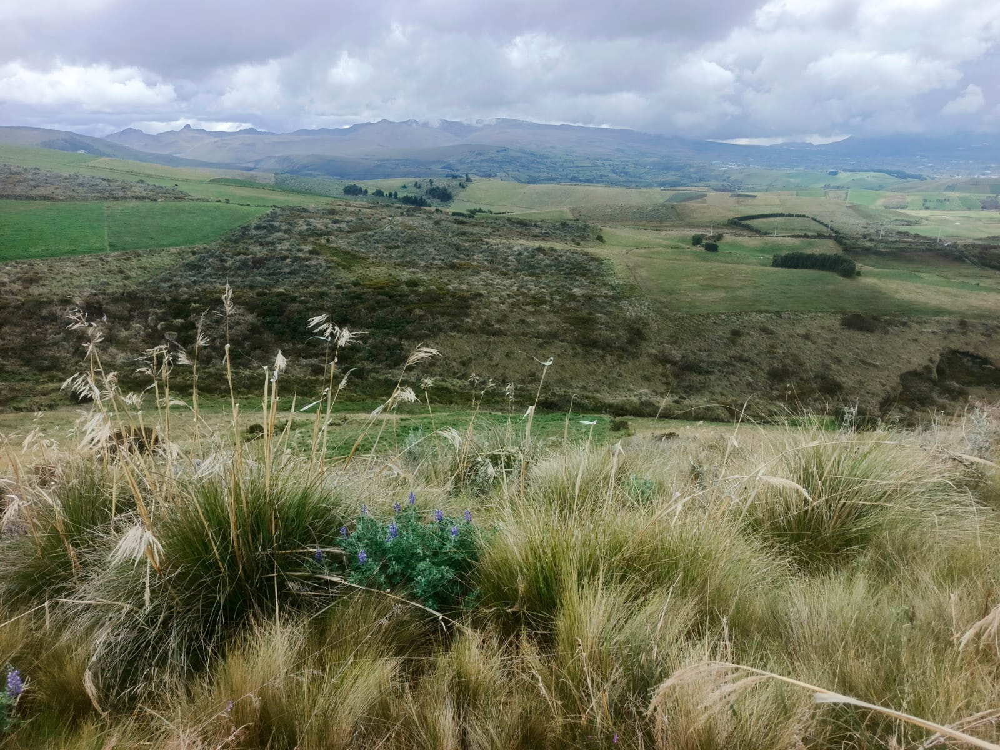
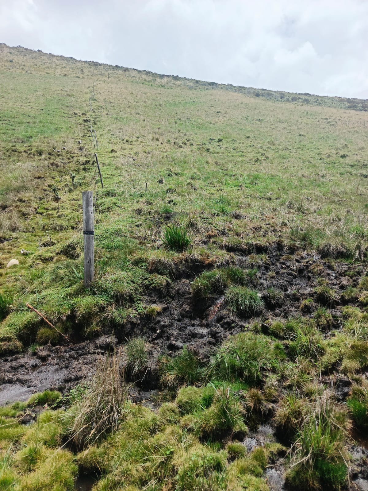

← volver al mapa
Terreno - EC-RJ-155648
EC-RJ-155648 · terreno · CAYAMBE, Pichincha






Datos del remate
| Avalúo pericial | $14,230 |
| Tipo de bien | terreno |
| Área de construcción | 0.00 m² |
| Área de terreno | 22,586.52 m² |
| Cantón / Provincia | CAYAMBE, Pichincha |
| Dirección / Sector | cangahua-pisambillaa. canton cayambe, parroquia cangahua, sector: guaitapamba-pantajahua-porotojahua-jatontola, comuna pisambilla |
| Señalamiento | Primer Señalamiento |
| Fecha de remate | 2026-09-28 |
| No. de proceso | 17314202400462 |
Análisis vs. mercado
Descartado del análisis automático: precio por m² implausible ($0.63/m²) — probable error de datos de la fuente.
Descripción completa del avalúo
el bien inmueble comprende de un terreno con forma rectangular, de topografía irregular con pendiente positiva, con una vertiente de agua que permite el acceso al agua de riego.el acceso al terreno es bastante complicado sin una camioneta 4x4 debido a los caminos de tierra, asi mismo es importante señalar que por mas que se mencione que el terreno colinda con calles no están como tal aperturadas y no es posible el acceso directo al lote, las calles son intransitables con vehículo, solo se puede acceder de forma peatonal.otro aspecto que cabe resaltar es que el lote se encuentra a más de los 3300 msnm esta sobre la frontera agrícola, o el inicio de zonas de conservación de paramo, por lo mismo el terreno no se puede fraccionar en lotes mas pequeños ni construir(con permisos) en estas zonas de protección como lo establece el cootad.
se indica la existencia del bien inmueble embargado, ubicado en la provincia de pichincha, cantón cayambe, parroquia cangahua, comuna pisambilla, área de terreno según escrituras 22,586.52 m2. el valor del valor del avalúo del bien inmueble embargado es de catorce mil docientos veintinueve con 33/100 dolares americanos ($14,229.51).
canton cayambe, parroquia cangahua, sector: guaitapamba-pantajahua-porotojahua-jatontola, comuna pisambilla
Límites: norte: con camino público en 161,44 metros y con lote número ciento diecinueve en 25.79 metros sur: con lote numero ciento dieciséis en 205.31m oriente: con lote número ciento diecinueve en 31.55metros y con el lote numero ciento veinte en 87.72m occidente: con camino público en 134.90metros
Clave catastral: 1702521590096
Esta ficha es una copia de lo publicado en el sitio oficial de remates
judiciales de la Función Judicial del Ecuador, para consulta — no
reemplaza el expediente judicial. remates.funcionjudicial.gob.ec no da
un link propio por remate, por eso se generó esta página aparte.
Antes de ofertar, el expediente debe revisarlo un abogado.